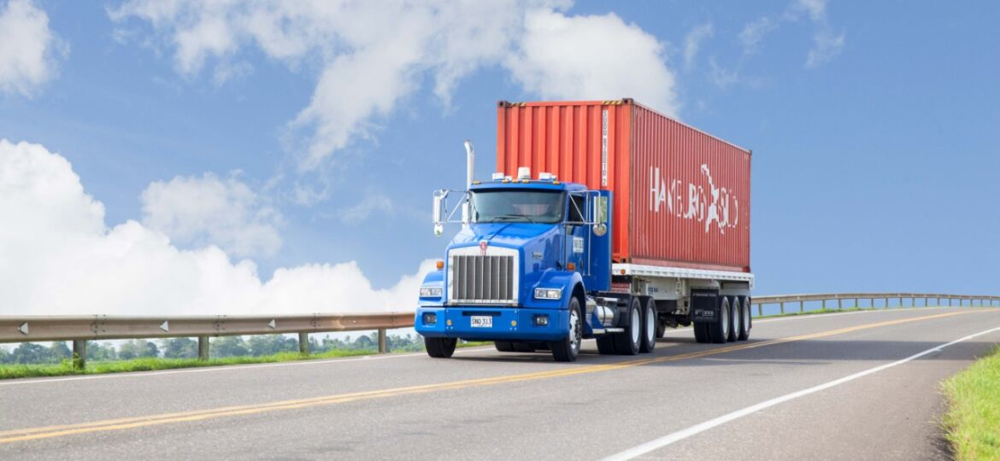

Transporte terrestre
El transporte terrestre es el transporte que se realiza sobre la superficie terrestre. La gran mayoría de transportes terrestres se realizan sobre ruedas que podrían ser automóviles, autobuses, motocicletas, camiones de alto tonelaje, etc...
